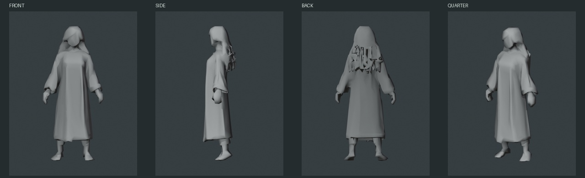
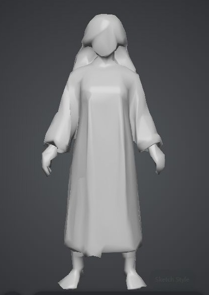
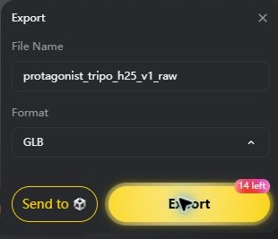

官方免费导出成功，已下载GLB并在Blender打开。只生成一次，消耗15免费点，余额185。三份重复下载文件哈希相同，本目录只留一份，原下载保留。
Blender检查工程 · 原始GLB · 完整检查说明 · 实际网格数据 · Tripo模型页
实际1463顶点／2943三角面、1个网格对象；没有UV、骨架或贴图。后发背面有明显碎裂尖刺状面片，手指粗糙，身体／白袍／头发未合理分件。这版仅作粗形和流程验证，不直接进入正式贴图／绑定。没有修改原始几何、Room1或4F。
相同原始模型、1280×720灰模审查；下方为真实渲染，没有AI重画。背面问题须单独审看。



完成形体／分件／拓扑与UV后，再按既定PixelLab流程制作像素贴图。当前没有新纹理、绑定或实机角色替换。